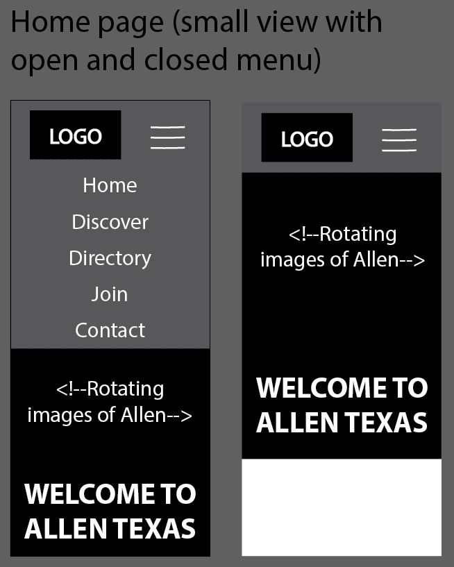
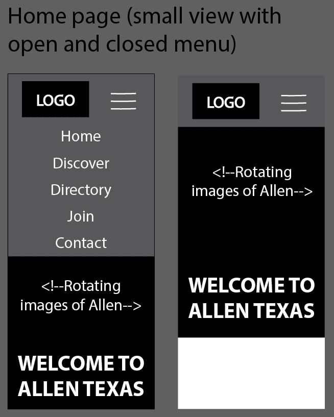

Chamber of Commerce Site Plan
Site Name
allenchamberofcommerce.com
Site Purpose
The purpose of this site is to promote the business interests of the members the local organizations and promote the area, attracting additional business, tourism, and people.
Logo
I created this logo based on the actual Allen logo. I changed the color and font to match the ones I chose for the site.
Wireframe Sketches
There will be 5 total pages within the site.
Here are a few snippets of what I would like the first view of the site
to look like in different views.
 
